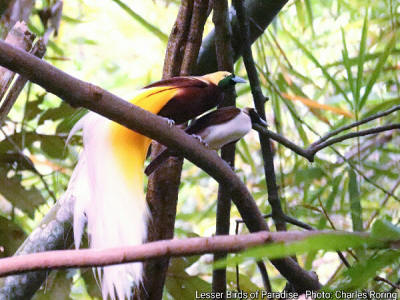

Wildlife Watching Tour in Tangkoko Nature Reserve and Minahasa Highland of North Sulawesi
Tangkoko Nature Reserve in Bitung municipality of Indonesia is a highly recommended destination for visitors who are interested in birdwatching/ wildlife photography tour. Knobbed hornbill, Sulawesi Hanging Parrot, Lilac Kingfisher are some of the many birds which visitors could see. Mammals such as Sulawesi-crested Macaque, Celebes Bear Cuscus and Gursky's Spectral Tarsier could also be seen in the forest.The trip to Tangkoko is usually combined with trip to Minahasa highland to look for endemic birds such as Scaly-breasted Kingfisher, Sulawesi Blue Flycatcher, Sulawesi Cuckoo-dove, Sulawesi Myzomela, Black-crowned White-eye, and etc.
Birding in Indonesia
Indonesia is a great destination for visitors who are interested in birdwatching. Places like Minahasa highland and Tangkoko in North Sulawesi; Waigeo and Tambrauw in West Papua are important birding sites which visitors can explore.

Birdwatching in Sonder town of Minahasa
Sonder is a nice little town in the highland of Minahasa that is recommended as destination for nature lovers. Birdwatching, butterflywatching, cross country hiking can be done in the area.

Birding and Nature Tour in Minahasa of North Sulawesi

Minahasa is a regency in the Province of North Sulawesi of the Republic of Indonesia. It is a great destination for visitors who are interested in birds, beautiful nature as a whole and culture. The tour will allow participants to watch such birds as Scaly-breasted Kingfisher, Grey-cheeked Green Pigeon, Sulawesi Scops Owl, Sulawesi Hanging Parrot, Grey-sided Flowerpecker, Citrine Canary Flowerpecker, Turquoise Flycatcher and etc.
Traveling and Birdwatching in North Sulawesi

The Province of North Sulawesi is a great destination for visitors who are interested in exploring the natural beauty of Minahasa peninsula. Tour participant can enjoy birdwatching, butterfly watching, sightseeing, hiking through forest, farmland and rice fields.
Holiday in the Highland of Minahasa

Sonder is a small town in the highland of Minahasa. It is a nice destination for visitors who like nature. They can enjoy birdwatching, butterflywatching or hiking around the farmlands to see its natural beauty. There are forest with clove trees, coconut trees, teak wood tree as well as vegetable gardens and rice fields.
Birdwatching Tour in Sulawesi
The island of Sulawesi has got high number of endemic birds due to its geographic location in the transitional region between the continents of Asia and Australia. Visitors who travel to this region will be able to watch Knobbed Hornbill, Finch-billed Myna, Lilac-cheeked Kingfisher, Black-ringed White Eye, Citrine Canary-flycatcher and a lot more.
Butterfly Watching Tour in West Papua of Indonesia
There are various species of butterfloes and other tropical insects which visitors can see. They include Common Green butterfly, Cruiser Butterfly, Silky Owl Butterfly, and etc.

Birding in Tambrauw Mountains
Tambrauw Mountains are located between Manokwari and Sorong. There are several sites that I highly recommend for birdwatching. The ones in highland region are the natural habitat of New Guinea Vulturine Parrot, Hooded Pitta, Red-bellied Pitta, Mountain Peltop, and even the Magnificent Bird of Paradise.
Hiking Tour in Minahasa Highland
Minahasa highland is a region in the province of North Sulawesi whose landscape mostly consists of mountains, hills, valleys, lakes, and rice fields. Visitors could enjoy the scenery, watch birds and butterflies by hiking along its farmland roads.
Birding in Bali

Bali is a great destination for visitors who want to see beautiful nature and unique culture of Balinese people. It also has got forest and coastal areas that are good for birding.
Birding in Sorong Forest
Sorong city is the main gate for visitors who want to travel to Raja Ampat. It has got several interesting places for tourist who want to spend 1 day tour in nature around the city or in exploring the city and see its people in their daily life.
For visitors who want to watch birds and other wildlife, they can go to remote forest outside the city.
7 Days/ 6 Nights Raja Ampat Tour: Snorkeling, Sightseeing, Birdwatching and Wildlife Watching
Raja Ampat is a popular destination for marine tourism in Indonesia. Visitors who go there can enjoy snorkeling, exploring karst for sightseeing and hiking in the forest to watch paradise birds and other wild animals of Waigeo island.
Birding in Raja Ampat
Raja Ampat is a great destination in Indonesia for both domestic and international birders. Its tropical rainforest and coastal areas are home such birds as Red Bird of Paradise, Palm Cockatoo, Lowland Peltop, and Eclectus Parrot. Birding as ecotourism activity is still very new in this archipelago. Birding visitors are highly advised to bring their own birding devices such as binoculars, and spotting scope.
12 Days/ 11 Nights Birdwatching in West Papua

West Papua is an important birdwatching destination for visitors who want to watch paradise birds such as Western Parotia, Wilson's Bird of Paradise and King Bird of Paradise. Raja Ampat is a great destination for snorkeling. This tour will combine these activities where participants can see both the rainforest and coral reef environments.
Birds of Paradise
Birds of Paradise mostly live in tropical rainforest of West Papua. Popular destinations for watching them in Indonesia include Sausapor, Klabili, Gauksuak, and Waigeo. They can easily be accessed from Sorong city. Visitors who travel to these places could watch Lesser Birds of Paradise, King Bird of Paradise, Magnificent Riflebird, Twelve-wired Bird of Paradise, Glossy-mantled Manucode, Trumpet Manucode, Red Bird of Paradise and Wilson's Bird of Paradise.

The Red Paradise Birds of Waigeo Island
There are several species of birds that live in Waigeo, Gam, Batanta, Salawati and Misool islands of Raja Ampat. The famous ones are Red Bird of Paradise and Wilson's Bird of Paradise. However, there are other species that visitors can also watch such as the Lesser Birds of Paradise, and the King Bird of Paradise in Misool island.
Lesser Birds of Paradise
Lesser Birds of Paradise live in lowland and lower montane forest of New Guinea. They are important target of watching among birding visitors because they have got very beautiful feather. The birds are usually active in the mornings and in the afternoons. Their behaviour is similar to Red Bird of Paradise but they have got different colours in their feather. Lesser Birds of Paradise, King Bird of Paradise, Magnificent Riflebird can be watched especially in Klabili and Sausapor forest of Tambrauw regency
King Bird of Paradise
King Bird of Paradise is one of the 38 species of paradise birds of New Guinea. It is a small bird but has got beautiful red and white feather with yellow-orange bill. The bird likes to live among the rottan vines that are hanging to the ground from high tree.
There are some birdwatching sites in West Papua. The ones that I highly recommend are Susnguakti forest, Mount Soyti and lowland forest in the northern coast of the regency.
Burung Cendrawasih
Burung Cendrawasih yang disebut juga burung surga adalah satwa yang indah dan unik. Dari 44 spesies yang ada di seluruh dunia, sekitar 38 spesies hidup di Tanah Papua dan pulau-pulau yang ada di sekitarnya. Meningkatnya kepedulian masyarakat internasional terhadap upaya pelestarian hutan hujan tropis telah menjadikan burung surga sebagai daya tarik wisata terutama para pengamat burung Indonesia dan manca negara.
Cendrawasih Raja
Burung Cendrawasih Raja atau King Bird of Paradise (Cicinnurus regius) hidup di hutan hujan tropis dataran rendah hingga perbukitan di Tanah Papua. Lokasi wisata pengamatan burung Cemdrawasih Raja terdapat di hutan Susnguakti Manokwari, hutan Lembah Klasow Kabupaten Sorpng dan hutan Lembah Fef di Kabupaten Tambrauw.